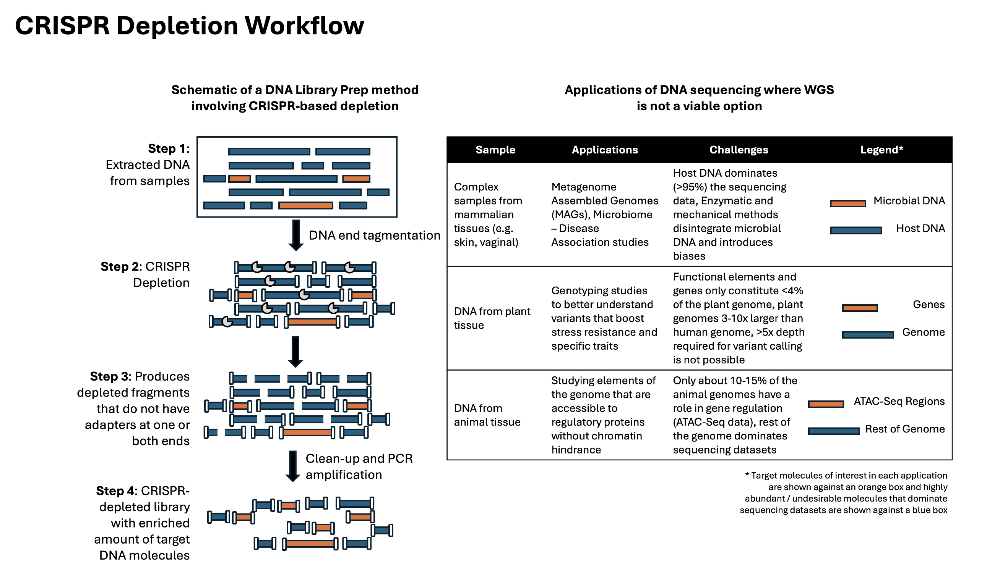

The Same Problem, Wearing Three Different Costumes
Whole-genome sequencing's defining strength — it captures everything, indiscriminately — is also its most persistent inefficiency. Most research questions don't actually need "everything." They need a specific fraction of the genome, and WGS spends the same sequencing budget on the 95% you don't care about as it does on the 5% you do. By the time I'd worked through the pandemic-preparedness, newborn-screening, and single-cell projects described elsewhere on this site, a pattern was hard to ignore: three superficially unrelated fields were all hitting a version of the exact same wall.
In metagenomics, host DNA dominates a clinical or environmental sample and dilutes the microbial signal researchers actually want — a problem for detecting antibiotic-resistance genes or assembling low-abundance or novel pathogens, where the organism of interest might be a rounding error against a backdrop of human or environmental DNA. In agricultural genomics, plant breeders doing low-pass WGS or genotyping-by-sequencing typically work at under 3× coverage, on genomes that are frequently polyploid, large, and only 5% functional — with repetitive elements consuming 45–70% of the genome and crowding out the reads that would actually resolve a variant of interest. Whole-exome sequencing is a partial answer, but it requires designing and synthesizing capture probes, with the cost and lead time that implies. In gene-regulation research, only 10–20% of the genome is regulatory at all, and which 10–20% is highly cell-type- and condition-dependent — which makes a fixed, probe-based capture panel a poor fit, since the "interesting" region of the genome keeps moving depending on what experiment you're running.
Three fields, three vocabularies, one shared shape: a small, valuable fraction of the genome buried under a large, well-characterized, unwanted majority.
The Scientific Approach: One Framework, Three Targets
The response to a pattern like that shouldn't be three separate one-off assays. It should be a platform: a depletion framework where the underlying molecular biology and computational design process stay fixed, and only the target definition changes. Practically, that means: (1) characterize, for a given application, what fraction of sequencing output a defined set of molecules is consuming and confirm that removing them doesn't touch the signal of interest; (2) design CRISPR-gRNAs against that defined set with the same specificity-scoring rigor regardless of whether the "unwanted majority" is human ribosomal RNA, host genomic DNA in a metagenomic sample, or non-functional repetitive elements in a plant genome; and (3) validate with the analysis pipeline the end user will actually run, not a generic proxy metric.
What makes this a platform decision rather than a research curiosity is that step (2) — guide design and specificity validation — is largely application-agnostic. The computational infrastructure for scoring on-target efficiency and off-target risk, filtering candidate guides, and simulating expected depletion yield doesn't fundamentally change between "deplete ribosomal RNA from a nasal swab" and "deplete repetitive elements from a sorghum genome." What changes is the target list you feed it and the downstream pipeline you validate against.
Building a Platform, Not a One-Off Assay
Treating this as shared infrastructure rather than bespoke chemistry changes how you build it:
- A reusable target-definition step. For each new application, the first deliverable isn't a guide RNA — it's a defensible, data-driven definition of exactly what should be depleted (which host sequences, which repeat classes, which regulatory-irrelevant regions) and a quantified estimate of how much sequencing capacity depleting it would free up. That estimate is what turns a scientific idea into something worth building a product around.
- A shared specificity-validation harness. Rather than re-deriving off-target scoring logic for every new application, the goal was a consistent computational process for confirming a candidate guide panel wouldn't collaterally deplete the signal of interest — whether "signal of interest" meant a microbial genome, a functional plant gene, or an active regulatory element.
- Application-specific downstream validation, every time. The one step that can't be generalized away is proving the depletion actually improves the thing a researcher in that specific field cares about — assembly quality for a novel pathogen, variant-calling accuracy for a breeding program, peak-calling sensitivity for a regulatory-element study. A platform gives you a faster path to that validation step; it doesn't substitute for doing it.
Three Applications, One Design Loop
In metagenomics, the depletion target is host-derived DNA — removing it raises the effective sequencing depth available for microbial content, which directly improves both the sensitivity of detecting low-abundance organisms and the assembly quality achievable for genomes that would otherwise be reconstructed from a thin trickle of reads. In agricultural genomics, the depletion target is the non-functional, repetitive majority of a polyploid plant genome — removing it lets a low-pass WGS or GBS study concentrate its already-limited coverage on the functional fraction of the genome where breeding-relevant variants actually live, without the cost and lead time of a custom capture panel. In gene-regulation research, the target is, by design, whatever isn't the regulatory element under study in that particular experiment — a harder, more context-dependent target definition, and consequently the application where the "define what to deplete" step of the framework carries the most weight.
Why This Matters as a Platform Decision
None of these three applications individually justifies building a general platform — each one, on its own, could be solved with a bespoke assay and never look back. The case for building shared infrastructure instead is that the same underlying insight (know precisely what you don't need, and remove it before you pay to sequence it) keeps reappearing across fields that don't otherwise talk to each other. Building the specificity-validation and guide-design machinery once, well, and generically is what let a team that started by cleaning up basic RNA-seq libraries end up plausibly relevant to metagenomic pathogen surveillance, plant breeding programs, and epigenomics — without reinventing the computational core each time.
There's a real risk in platform thinking that's worth naming honestly: the temptation to force every new application through the existing framework even when it's a poor fit, because the infrastructure already exists and reuse feels efficient. Gene-regulation depletion is the case in this set that pushes hardest against that temptation, precisely because "what to deplete" isn't a fixed target the way ribosomal RNA or a specific pseudogene is — it shifts with cell type and experimental condition, which means the target-definition step can't be shortcut just because the design and validation machinery downstream of it is already built. Treating that step as a one-time solved problem, rather than a genuinely new scientific question each time, is exactly how a platform quietly stops fitting the problem it's being asked to solve. The discipline that keeps a shared framework honest is insisting that step (1) — defining the target, with real data, for this specific application — gets done from scratch every time, even when steps (2) and (3) don't.